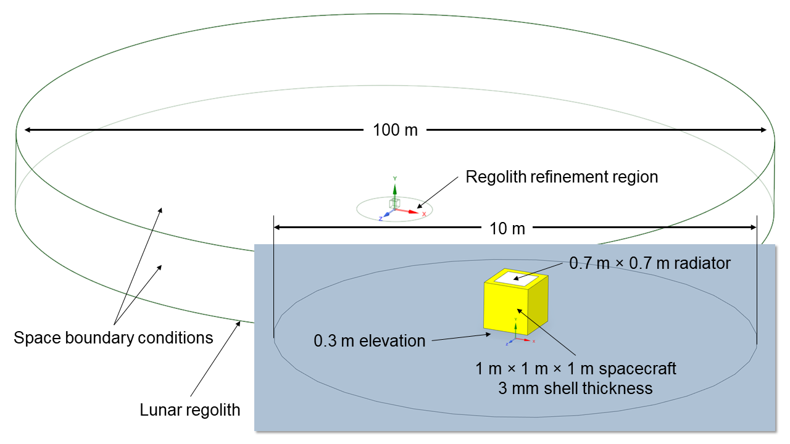
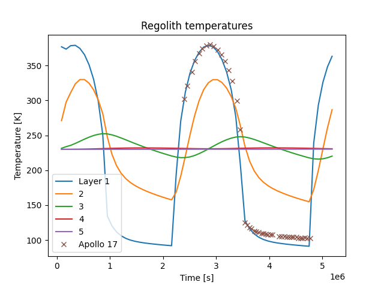
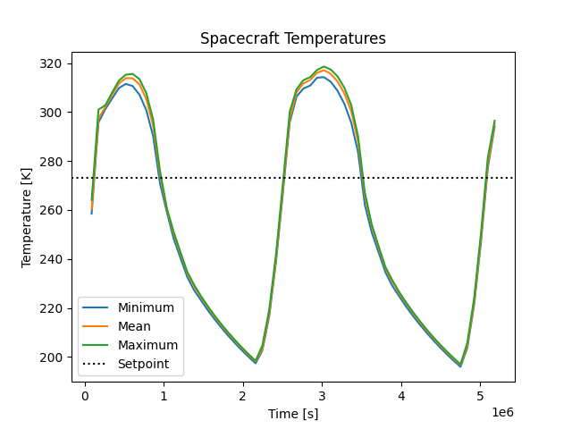

Note
Go to the end to download the full example code.
Thermal Model of a Lunar Lander Using the Monte Carlo Radiation Model#
This example demonstrates creating and solving a thermal model of a lander on the lunar surface using Fluent’s Monte Carlo radiation solver.
PyFluent uses the following loop at each timestep to retrofit the required functionality to Fluent:
Calculate the current sun vector (direction of Sun relative to observer).
Update the radiation direction in Fluent.
Change the radiator emissivity depending on whether the louvers are open.
Run the solution for 1 timestep.
Workflow tasks
The Thermal Model of a Lunar Lander Using the Monte Carlo Radiation Model example guides you through these tasks:
Setting up a Monte Carlo radiation model.
Creation of materials with thermal and radiation properties.
Setting boundary conditions for heat transfer and radiation calculations.
Setting up shell conduction boundary conditions.
Calculating a solution using the pressure-based solver.
Dynamically updating the Sun direction and lander state at each step.
Problem description
The lander is modelled as a hollow 1 m × 1 m × 1 m cube with aluminum walls 3 mm thick, covered in highly reflective multilayer insulation (MLI). To allow for comparison to empirical data, the landing site is selected to be the same as that of the Apollo 17 mission, which took measurements of the regolith temperatures in the Taurus-Littrow valley located at 20.1908° N, 30.7717° E.
The lander has a radiator on the top surface of size 0.7 m × 0.7 m with louvers, which open above 273 K to reject heat and close below 273 K to retain heat. The PyFluent API is used to automatically update the radiator state and the direction of the Sun at each timestep.
The case setup is taken from reference [1], originally created in ANSYS Thermal Desktop. It uses a thermal model of the lunar regolith developed in reference [2]. Validation data for the regolith temperatures are taken from measurements conducted by the Apollo 17 mission to the Moon [3].

Dependencies#
ansys-fluent-core matplotlib numpy pandas
Preliminary Setup#
First, we will define functions to compute the direction of the Sun relative to the lander.
Perform required imports, including downloading the required geometry files. The mesh has been pre-made for this problem.
# flake8: noqa: E402
from itertools import chain
import os
import numpy as np
import ansys.fluent.core as pyfluent
from ansys.fluent.core import examples
lander_spaceclaim_file, lander_mesh_file, apollo17_temp_data = [
examples.download_file(
f,
"pyfluent/lunar_lander_thermal",
save_path=os.getcwd(),
)
for f in [
"lander_geom.scdoc",
"lander_mesh.msh.h5",
"apollo17_temp_data.csv",
]
]
Define the key variables:
The obliquity (axial tilt) of the Moon relative to the plane of the Earth’s orbit around the Sun
The setpoint temperature above which the radiator louvers open
The coordinates of the lander
The timestep size
The number of timesteps
We will use a timestep size of 24 hours and run the simulation for 60 Earth days, or approximately 2 lunar days.
# Lunar axial obliquity relative to ecliptic
moon_obliquity = np.deg2rad(1.54)
# Louver setpoint temperature [K]
louver_setpoint_temp = 273
# Lander coordinates (Apollo 17 landing site)
land_lat = np.deg2rad(20.1908)
land_lon = np.deg2rad(30.7717)
# Timestep size of 1 Earth day
step_size = 86400
# Run simulation for 60 Earth days
n_steps = 60
Define the function to calculate the Sun vector at the landing site. This is a vector that points from the observer’s location toward the Sun. It takes Earth’s ecliptic longitude at the beginning of the simulation, the subsolar longitude at the beginning of the simulation, the observer’s coordinates, and the time elapsed in seconds since the beginning of the simulation as inputs. It returns the Sun’s altitude and azimuth as outputs.
For more information, see the following links:
def calc_sun_vecs_for_moon(
earth_ecliptic_lon_start: float,
subsol_lon_start: float,
obsv_lat: float,
obsv_lon: float,
t: float,
) -> tuple[float, float]:
"""Calculate sun vectors."""
# Earth ecliptic longitude
earth_ecliptic_lon = earth_ecliptic_lon_start + 2 * np.pi / (365 * 86400) * t
# Subsolar point
subsol_lat = np.arcsin(np.sin(-moon_obliquity) * np.sin(earth_ecliptic_lon))
subsol_lon = subsol_lon_start + t / (29.5 * 86400) * 2 * np.pi
# Solar altitude and azimuth
sun_obsv_phaseang = np.arccos(
np.sin(subsol_lat) * np.sin(obsv_lat)
+ np.cos(subsol_lat) * np.cos(obsv_lat) * np.cos(obsv_lon - subsol_lon)
)
sun_alt = np.pi / 2 - sun_obsv_phaseang
sun_azm = np.arctan2(
np.cos(obsv_lat) * np.sin(subsol_lat)
- np.sin(obsv_lat) * np.cos(subsol_lat) * np.cos(subsol_lon - obsv_lon),
np.cos(subsol_lat) * np.sin(subsol_lon - obsv_lon),
)
return sun_alt, sun_azm
Define the function that converts the Sun’s altitude and azimuth, as
calculated by calc_sun_vecs_for_moon, into a beam direction in Cartesian
coordinates that can be used in Fluent. The coordinate system used is:
X: North
Y: Zenith
Z: East
def sun_vec_to_beam_dir(
sun_alt: float,
sun_azm: float,
) -> tuple[float, float, float]:
"""Calculate beam direction."""
# Coordinate system:
# X: North
# Y: Zenith
# Z: East
x = np.cos(sun_alt) * np.cos(sun_azm)
y = np.sin(sun_alt)
z = np.cos(sun_alt) * np.sin(sun_azm)
# Since the sun vector points toward the sun, we need to take the
# negative to get the beam direction
return -x, -y, -z
The radiator will be opened or closed based on its mean temperature. We will access the solver session object to extract nodal temperatures. It takes a list of surface names as input, finds their surface IDs, obtains the scalar field data from the solver, then returns the average temperature.
def get_surf_mean_temp(
surf_names: list[str],
solver: pyfluent.session_solver.Solver,
) -> float:
"""Calculate mean surface temperature."""
# Get surface IDs
surfs = solver.field_info.get_surfaces_info()
surf_ids_ = [surfs[surf_name]["surface_id"] for surf_name in surf_names]
# Flatten surf_ids nested list
surf_ids = list(chain(*surf_ids_))
# Get temperature data
temp_data = solver.field_data.get_scalar_field_data(
field_name="temperature",
surfaces=surf_ids,
)
# Calculate mean temperature across surfaces
return float(np.mean(list(temp_data.values())))
Start Fluent#
We are now ready to launch Fluent and load the mesh.
solver_session = pyfluent.launch_fluent(
precision="double",
processor_count=12,
mode="solver",
)
print(solver_session.get_fluent_version())
solver_session.settings.file.read_mesh(file_name=lander_mesh_file)
Case Setup#
We are now ready to begin setting up the case.
Set the solution type to transient and configure. We will use 2nd-order time- stepping, a fixed timestep size, and a limit of 20 iterations per timestep. Since we are only running 1 timestep at a time, the time step count is set to 1.
# Set solution to transient
solver_session.settings.setup.general.solver.time = "unsteady-2nd-order"
# Set transient settings
trans_controls = solver_session.settings.solution.run_calculation.transient_controls
trans_controls.type = "Fixed"
trans_controls.max_iter_per_time_step = 20
trans_controls.time_step_count = 1
trans_controls.time_step_size = step_size
Enable the energy model. Since fluid flow is not simulated, we will set the viscosity model to laminar.
models = solver_session.settings.setup.models
models.energy.enabled = True
models.viscous.model = "laminar"
Enable the Monte Carlo radiation model with two radiation bands: one for solar radiation and one for thermal infrared radiation. Ensure that bands are created in order of increasing wavelength.
The number of histories is set to 10 million to reduce computation time, but more may be required for accurate results.
The limits of each band are based on Fluent manual recommendations and on space industry best practices [4].
# Set up radiation model
radiation = models.radiation
radiation.model = "monte-carlo"
radiation.monte_carlo.number_of_histories = 1e7
# Define range of solar wavelengths
radiation.multiband["solar"] = {
"start": 0,
"end": 2.8,
}
# Define range of thermal IR wavelengths
radiation.multiband["thermal-ir"] = {
"start": 2.8,
"end": 100,
}
# Solve radiation once per timestep
radiation_freq = radiation.solve_frequency
radiation_freq.method = "time-step"
radiation_freq.time_step_interval = 1
Create materials to represent the vacuum of space (to prevent thermal conduction through the cell zone representing vacuum) and the lunar regolith (soil). The thermal conductivity of the regolith and the surface ‘fluff’ is strongly temperature-dependent and so must be modelled using an expression.
# --- Properties of vacuum ---
# Thermal conductivity: 0
vacuum = solver_session.settings.setup.materials.solid.create("vacuum")
vacuum.chemical_formula = ""
vacuum.thermal_conductivity.value = 0
vacuum.absorption_coefficient.value = 0
vacuum.refractive_index.value = 1
# --- Properties of fluff (see ref. [2]) ---
# Density: 1000 [kg m^-3]
# Specific heat capacity: 1050 [J kg^-1 K^-1]
# Thermal conductivity: 9.22e-4*(1 + 1.48*(temperature/350 K)^3) [W m^-1 K^-1]
fluff = solver_session.settings.setup.materials.solid.create("fluff")
fluff.chemical_formula = ""
fluff.density.value = 1000
fluff.specific_heat.value = 1050
fluff.thermal_conductivity.option = "expression"
fluff.thermal_conductivity.expression = (
"9.22e-4[W m^-1 K^-1]*(1 + 1.48*(StaticTemperature/350[K])^3)"
)
# --- Properties of regolith (see ref. [2]) ---
# Density: 2000 [kg m^-3]
# Specific heat capacity: 1050 [J kg^-1 K^-1]
# Thermal conductivity: 9.30e-4*(1 + 0.73*(temperature/350 K)^3) [W m^-1 K^-1]
regolith = solver_session.settings.setup.materials.solid.create("regolith")
regolith.chemical_formula = ""
regolith.density.value = 2000
regolith.specific_heat.value = 1050
regolith.thermal_conductivity.option = "expression"
regolith.thermal_conductivity.expression = (
"9.30e-4[W m^-1 K^-1]*(1 + 0.73*(StaticTemperature/350[K])^3)"
)
Since the Monte Carlo radiation model only supports radiative transfer through a cell zone, a cell zone is used to model the vacuum around the lander. This cell zone must be set to be a solid so that the fluid equations are not solved there, then it must be assigned to the vacuum material.
cellzones = solver_session.settings.setup.cell_zone_conditions
cellzones.set_zone_type(
zone_list=["geom-2_domain"],
new_type="solid",
)
cellzones.solid["geom-2_domain"].material = "vacuum"
We will implement the regolith model in reference [2] by modelling it as a wall exhibiting multilayer shell conduction. A basal heat flux is used to represent the geothermal heat from the Moon’s interior that heats the regolith from the bottom.
# --- Regolith BC ---
# Thickness of layers: 0.02, 0.04, 0.08, 0.16, 0.32 [m]
# Heating at base: 0.031 [W m^-2]
# Surface absorptivity: 0.87
# Surface emissivity: 0.97
regolith_bc = solver_session.settings.setup.boundary_conditions.wall["regolith"]
regolith_bc.thermal.q.value = 0.031
regolith_bc.thermal.planar_conduction = True
regolith_bc.thermal.shell_conduction = [
{
"thickness": 0.02,
"material": "fluff",
},
{
"thickness": 0.04,
"material": "regolith",
},
{
"thickness": 0.08,
"material": "regolith",
},
{
"thickness": 0.16,
"material": "regolith",
},
{
"thickness": 0.32,
"material": "regolith",
},
]
regolith_bc.radiation.internal_emissivity_band = {"solar": 0.87, "thermal-ir": 0.97}
The space boundary condition represents deep space and also acts as the source of the Sun’s illumination in the simulation.
# --- Set up space boundary condition ---
# Temperature: 3 [K]
# Emissivity: 1
# Absorptivity: 1
# Solar flux: 1414 [W m^-2]
space_bc = solver_session.settings.setup.boundary_conditions.wall["space"]
space_bc.thermal.thermal_bc = "Temperature"
space_bc.thermal.t.value = 3
space_bc.thermal.material = "vacuum"
space_bc.radiation.mc_bsource_p = True
space_bc.radiation.direct_irradiation_settings.direct_irradiation["solar"] = 1414
space_bc.radiation.diffuse_irradiation_settings.diffuse_fraction_band = {
"solar": 0,
"thermal-ir": 0,
}
space_bc.radiation.internal_emissivity_band = {"solar": 1, "thermal-ir": 1}
The spacecraft is covered in reflective MLI (multilayer insulation) and heat transfer through the aluminum shell can be simulated using shell conduction.
# --- Set up spacecraft shell boundary condition ---
# Thickness: 0.03 [m]
# Material: aluminum
# Absorptivity: 0.05
# Emissivity: 0.05
sc_mli_bc = solver_session.settings.setup.boundary_conditions.wall["sc-mli"]
sc_mli_bc.thermal.planar_conduction = True
sc_mli_bc.thermal.shell_conduction = [
{
"thickness": 0.03,
"material": "aluminum",
},
]
sc_mli_bc.radiation.internal_emissivity_band = {"solar": 0.05, "thermal-ir": 0.05}
The spacecraft’s radiator is modelled in a similar way to the spacecraft’s walls, but the emissivity is left unset as it will be changed dynamically by our PyFluent script depending on its temperature during the simulation.
# --- Set up spacecraft radiator boundary condition ---
# Thickness: 0.03 [m]
# Material: aluminum
# Absorptivity: 0.17
# Emissivity: 0.09 below 273 K, 0.70 otherwise
sc_rad_bc = solver_session.settings.setup.boundary_conditions.wall["sc-radiator"]
sc_rad_bc.thermal.planar_conduction = True
sc_rad_bc.thermal.shell_conduction = [
{
"thickness": 0.03,
"material": "aluminum",
},
]
sc_rad_bc.radiation.internal_emissivity_band = {"solar": 0.17}
Initialize the simulation. Doing so now will create conductive zones between shell layers representing the regolith, allowing us to make report definitions on them in the next step. The entire domain will be initialized to a temperature of 230 K, or -43 °C.
sim_init = solver_session.settings.solution.initialization
sim_init.defaults["temperature"] = 230
sim_init.initialize()
Create reports for the spacecraft’s minimum, mean, and maximum temperatures.
surf_report_defs = solver_session.settings.solution.report_definitions.surface
sc_surfs = ["sc-radiator", "sc-mli"]
surf_report_defs["sc-min-temp"] = {
"surface_names": sc_surfs,
"report_type": "surface-facetmin",
"field": "temperature",
}
surf_report_defs["sc-avg-temp"] = {
"surface_names": sc_surfs,
"report_type": "surface-facetavg",
"field": "temperature",
}
surf_report_defs["sc-max-temp"] = {
"surface_names": sc_surfs,
"report_type": "surface-facetmax",
"field": "temperature",
}
Create reports for the mean temperatures of each regolith layer. We will store the report names for use later.
surf_report_defs = solver_session.settings.solution.report_definitions.surface
# Loop over all regolith reports to set common properties
regolith_report_names = []
for i in range(1, 5 + 1):
report_name = f"regolith-layer-{i}-temp"
surf_report_defs[report_name] = {
"report_type": "surface-facetavg",
"field": "temperature",
}
regolith_report_names.extend([report_name])
surf_report_defs["regolith-layer-1-temp"].surface_names = ["regolith"]
surf_report_defs["regolith-layer-2-temp"].surface_names = ["regolith-1:2"]
surf_report_defs["regolith-layer-3-temp"].surface_names = ["regolith-2:3"]
surf_report_defs["regolith-layer-4-temp"].surface_names = ["regolith-3:4"]
surf_report_defs["regolith-layer-5-temp"].surface_names = ["regolith-4:5"]
Create temperature report files for post-processing.
surf_report_files = solver_session.settings.solution.monitor.report_files
# Spacecraft temperatures
surf_report_files["sc-temps-rfile"] = {
"report_defs": ["flow-time", "sc-min-temp", "sc-avg-temp", "sc-max-temp"],
}
# Regolith temperatures
surf_report_files["regolith-temps-rfile"] = {
"report_defs": [*regolith_report_names, "flow-time"],
}
Set the case to save only the data file at each timestep for post-processing.
autosave = solver_session.settings.solution.calculation_activity.auto_save
autosave.case_frequency = "if-mesh-is-modified"
autosave.data_frequency = 1
autosave.save_data_file_every.frequency_type = "time-step"
autosave.append_file_name_with.file_suffix_type = "time-step"
Turn off the convergence criteria pertaining to fluid flow as there is no fluid flow in this simulation. Keep only the energy convergence criterion.
residuals = solver_session.settings.solution.monitor.residual.equations
for criterion in ["continuity", "x-velocity", "y-velocity", "z-velocity"]:
residuals[criterion].check_convergence = False
residuals[criterion].monitor = False
Write the case file. Enable overwrite.
solver_session.settings.file.batch_options.confirm_overwrite = True
solver_session.settings.file.write(
file_name="lunar_lander_thermal.cas.h5",
file_type="case",
)
Solve#
Run the case, using a loop to update the radiator state and Sun vector at each timestep. We will assume that the Earth’s ecliptic longitude and the subsolar longitude are both zero at the start of the simulation for simplicity.
for i in range(n_steps):
# Get current simulation time
t = solver_session.rp_vars("flow-time")
# Calculate sun vector
sun_alt, sun_azm = calc_sun_vecs_for_moon(
earth_ecliptic_lon_start=0,
subsol_lon_start=0,
obsv_lat=land_lat,
obsv_lon=land_lon,
t=t,
)
beam_x, beam_y, beam_z = sun_vec_to_beam_dir(
sun_alt=sun_alt,
sun_azm=sun_azm,
)
# Set beam direction
solver_session.settings.setup.boundary_conditions.wall[
"space"
].radiation.direct_irradiation_settings.beam_direction = [
beam_x,
beam_y,
beam_z,
]
# Calculate radiator mean temperature
rad_mean_temp = get_surf_mean_temp(
["sc-radiator"],
solver_session,
)
# Simulate closing louvers below 273 K by changing emissivity
radiation_emission = solver_session.settings.setup.boundary_conditions.wall[
"sc-radiator"
].radiation.internal_emissivity_band["thermal-ir"]
if rad_mean_temp < 273:
radiation_emission.value = 0.09
else:
radiation_emission.value = 0.70
# Run simulation for 1 timestep
solver_session.settings.solution.run_calculation.calculate()
Shut down the solver.
solver_session.exit()
Post-process#
Post-process the data.
Import the packages required for post-processing.
from pathlib import Path
import re
from matplotlib import pyplot as plt
import pandas as pd
Pandas will not correctly format the column names when reading in the Fluent output files. We will clean the names by removing all parentheses and double quotation marks.
def clean_col_names(df):
"""Clean column names."""
df.columns = [re.sub(r'["()]', "", col) for col in df.columns]
Read the Fluent output files for the regolith and spacecraft temperature data into Pandas dataframes. The separation delimiter between columns is defined as one or more spaces that is not immediately in front of or behind an alphabetical character, implemented as negative lookarounds in a regular expression.
root = Path(os.getcwd())
sep = r"(?<![a-zA-Z])\s+(?![a-zA-Z])"
# Read in regolith data
regolith_df = pd.read_csv(
root / "regolith-temps-rfile.out",
sep=sep,
header=2,
dtype=np.float64,
engine="python",
)
clean_col_names(regolith_df)
# Read in spacecraft data
sc_df = pd.read_csv(
root / "sc-temps-rfile.out",
sep=sep,
header=2,
dtype=np.float64,
engine="python",
)
clean_col_names(sc_df)
Read in the experimental data from Apollo 17 [3] to compare against the simulation. We will offset the data to start at time step 25 of the simulation, to ensure that the data are compared at the same sun angles.
apollo17_df = pd.read_csv(apollo17_temp_data)
apollo17_offset = regolith_df["flow-time"].iloc[25]
apollo17_df["Offset time since sunrise"] = (
apollo17_df["Time since sunrise"] + apollo17_offset
)
Set the data type of the time step column to integer.
Plot the mean temperatures of each layer of regolith, as well as a comparison with the Apollo 17 data. The simulation agrees well with experiment.
fig1, ax1 = plt.subplots()
regolith_df.plot(
x="flow-time",
y=[f"regolith-layer-{i + 1}-temp" for i in range(5)],
title="Regolith temperatures",
ax=ax1,
)
apollo17_df.plot(
x="Offset time since sunrise",
y="Temperature",
style="x",
xlabel="Time [s]",
ylabel="Temperature [K]",
ax=ax1,
)
ax1.legend(["Layer 1", "2", "3", "4", "5", "Apollo 17"])
Plot the minimum, mean, and maximum temperatures of the spacecraft.
fig2, ax2 = plt.subplots()
sc_df.plot(
x="flow-time",
y=["sc-min-temp", "sc-avg-temp", "sc-max-temp"],
title="Spacecraft Temperatures",
xlabel="Time [s]",
ylabel="Temperature [K]",
ax=ax2,
)
ax2.axhline(273, color="k", linestyle=":")
ax2.legend(["Minimum", "Mean", "Maximum", "Setpoint"])
Display the plots.
plt.show()
The expected plot for the mean temperature of the regolith layers (Figure 1) is as follows. This represents the regolith temperatures that would be observed without a spacecraft in the environment.

The expected plot for the spacecraft’s minimum, mean, and maximum temperatures (Figure 2) is as follows.

References#
[1] T.-Y. Park, J.-J. Lee, J.-H. Kim, and H.-U. Oh, “Preliminary Thermal Design and Analysis of Lunar Lander for Night Survival,” International Journal of Aerospace Engineering, vol. 2018, p. e4236396, Oct. 2018, doi: doi.org/10.1155/2018/4236396.
[2] R. J. Christie, D. W. Plachta, and M. M. Yasan, “Transient Thermal Model and Analysis of the Lunar Surface and Regolith for Cryogenic Fluid Storage,” NASA Glenn Research Center, Cleveland, Ohio, NASA Technical Report TM-2008 - 215300, Aug. 2008. [Online]. Available: https://ntrs.nasa.gov/citations/20080039640
[3] M. G. Langseth, S. J. Keihm, and J. L. Chute, “Heat Flow Experiment,” in Apollo 17: Preliminary Science Report, vol. SP-330, Washington, D.C.: NASA Lyndon B. Johnson Space Center, 1973. [Online]. Available: https://ui.adsabs.harvard.edu/abs/1973NASSP.330……/abstract
[4] L. Kauder, “Spacecraft Thermal Control Coatings References,” Goddard Space Flight Center, Greenbelt, MD 20771, NASA Technical Report NASA/TP-2005 - 212792, Dec. 2005. [Online]. Available: https://ntrs.nasa.gov/citations/20070014757